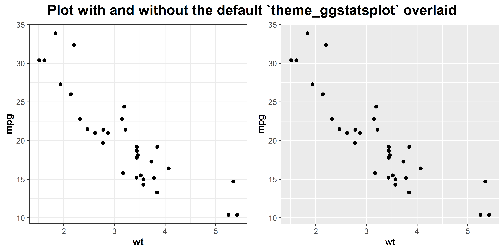
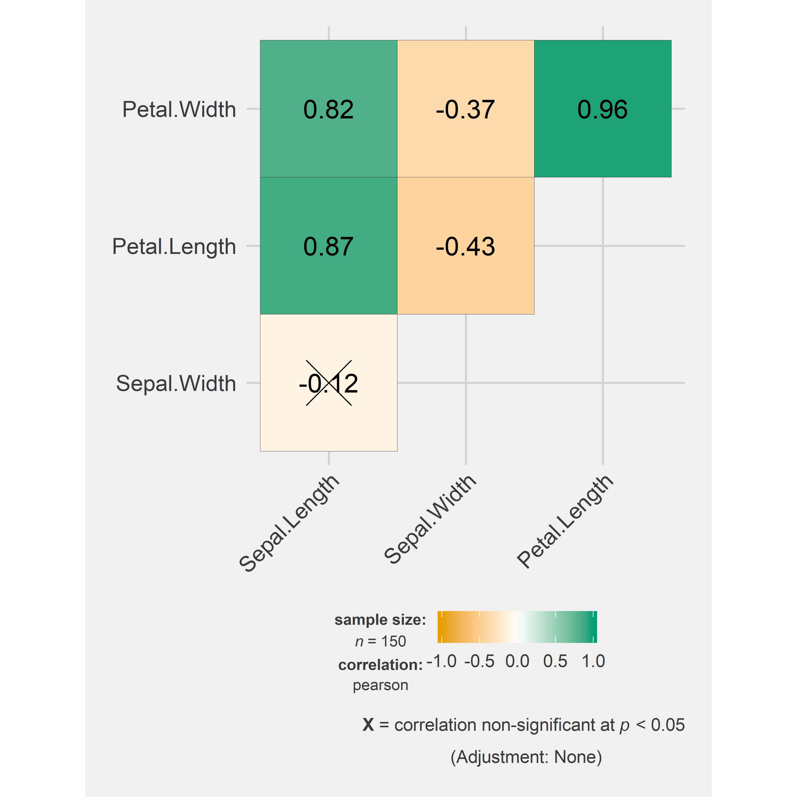

vignettes/web_only/theme_ggstatsplot.Rmd
theme_ggstatsplot.Rmdtheme_ggstatsplot
ggstatsplot uses a default theme theme_ggstatsplot(), which is a selected ggplot2 theme with few aesthetic modifications overlaid on top, that can be used with any ggplot2 object. Alternative name for this function is theme_mprl.
Here is a simple example:
library(ggplot2)
ggstatsplot::combine_plots(
# basic scatter plot
ggplot2::ggplot(
data = datasets::mtcars,
mapping = ggplot2::aes(x = wt, y = mpg)
) +
ggplot2::geom_point(),
# basic scatter plot with theme_ggstatsplot() added
ggplot2::ggplot(
data = datasets::mtcars,
mapping = ggplot2::aes(x = wt, y = mpg)
) +
ggplot2::geom_point() +
ggstatsplot::theme_ggstatsplot(),
labels = c("(i)", "(ii)"),
nrow = 1,
title.text = "Plot with and without ggstatsplot theme"
)
All plots in this package have theme_bw() by default as the base on which theme_ggstatsplot() is built, but this can be modified using the ggtheme argument. Let’s see an example with ggcorrmat function.
ggstatsplot::ggcorrmat(
data = datasets::iris,
cor.vars = c(Sepal.Length:Petal.Width),
matrix.type = "upper",
ggtheme = ggthemes::theme_fivethirtyeight(), # selected ggplot2 theme
ggstatsplot.layer = FALSE
)
Try modifying the theme for other functions (use themes from ggplot2, ggthemes, hrbrthemes, etc.).
If you find any bugs or have any suggestions/remarks, please file an issue on GitHub: https://github.com/IndrajeetPatil/ggstatsplot/issues
For details, see- https://indrajeetpatil.github.io/ggstatsplot/articles/web_only/session_info.html